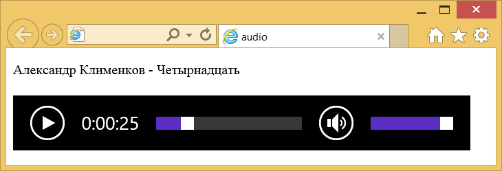

Элемент <audio>
| Internet Explorer | Chrome | Opera | Safari | Firefox |
| 9 | 5 | 11.10 | 4.1 | 4 |
| Android | Firefox Mobile | Opera Mobile | Safari Mobile |
| 2.2 | 4 | 11 | 5 |
Добавляет, воспроизводит и управляет настройками аудиозаписи на веб-странице. Путь к файлу задаётся через атрибут src или вложенный элемент <source>. Внутри контейнера <audio> можно написать текст, который будет выводиться в браузерах, не работающих с этим элементом.
Список поддерживаемых браузерами кодеков приведён в табл. 1.
| Кодек | Internet Explorer | Chrome | Opera | Safari | Firefox |
| ogg/vorbis | 3 | 10.50 | 3.5 | ||
| wav | 3 | 10.60 | 3.1 | 3.5 | |
| mp3 | 9 | 3 | 15 | 3.1 | 22 |
| AAC | 9 | 3 | 15 | 3.1 | 22 |
Для универсального воспроизведения в указанных браузерах аудио кодируют с помощью разных кодеков и добавляют файлы одновременно через элемент <source>.
Синтаксис
<audio src="URL"></audio>
<audio>
<source src="URL">
</audio>Закрывающий тег
Аттрибуты
- autoplay
- Звук начинает играть сразу после загрузки страницы.
- controls
- Добавляет панель управления к аудиофайлу.
- loop
- Повторяет воспроизведение звука с начала после его завершения.
- muted
- Отключает звук при воспроизведении музыки.
- src
- Указывает путь к воспроизводимому файлу.
Пример
<!DOCTYPE html>
<html>
<head>
<meta charset="utf-8">
<title>audio</title>
</head>
<body>
<p>Александр Клименков - Четырнадцать</p>
<audio controls>
<source src="audio/music.ogg" type="audio/ogg; codecs=vorbis">
<source src="audio/music.mp3" type="audio/mpeg">
Тег audio не поддерживается вашим браузером.
<a href="audio/music.mp3">Скачайте музыку</a>.
</audio>
</body>
</html>Результат примера в браузере IE показан на рис. 1.

Рис. 1. Воспроизведение аудиофайла
Примечание
Управление воспроизведением аудио различается между браузерами по своему виду, но основные элементы совпадают. Это кнопка воспроизведения/паузы, длина трека, прошедшее и суммарное время звучания, а также уровень громкости.
Спецификация ?
| Спецификация | Статус |
|---|---|
| WHATWG HTML Living Standard | Живой стандарт |
| HTML5 | Рекомендация |
Спецификация
Каждая спецификация проходит несколько стадий одобрения.
- Recommendation (Рекомендация) — спецификация одобрена W3C и рекомендована как стандарт.
- Candidate Recommendation (Возможная рекомендация) — группа, отвечающая за стандарт, удовлетворена, как он соответствует своим целям, но требуется помощь сообщества разработчиков по реализации стандарта.
- Proposed Recommendation (Предлагаемая рекомендация) — на этом этапе документ представлен на рассмотрение Консультативного совета W3C для окончательного утверждения.
- Working Draft (Рабочий проект) — более зрелая версия черновика после обсуждения и внесения поправок для рассмотрения сообществом.
- Editorʼs draft (Редакторский черновик) — черновая версия стандарта после внесения правок редакторами проекта.
- Draft (Черновик спецификации) — первая черновая версия стандарта.
Особняком стоит живой стандарт HTML (Living) — он не придерживается традиционной нумерации версий, поскольку находится в постоянной разработке и обновляется регулярно.